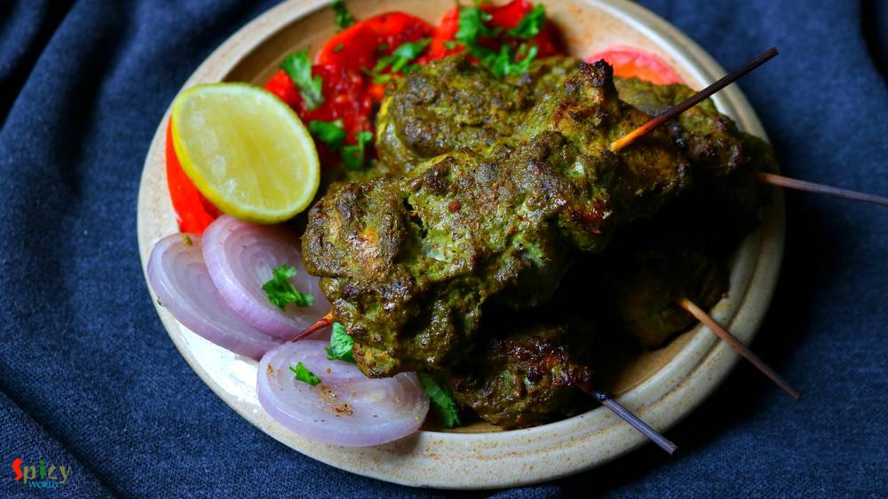

Simple and Easy Recipes

Nonveg Recipe
Dec 19, 2018
Mutton Handi is a delicious goat meat curry which has a scrumptious gravy and goes best with plain chapati, butter naan or pulao. Handi means clay pot. Usually mutton handi is cooked in clay pots, that's where the name came from. But I didn't have one, so cooked in my regular vessel. The taste was out of the world, soft pieces of slow cooked mutton literally stole my heart. If you are a mutton lov ...


Veg Recipe
Dec 17, 2018
This palak paneer recipe is the best for weeknight dinner. Usually while making palak paneer, we need several kind of paste like onion paste, tomato puree, spinach paste, ginger garlic paste ... time consuming ! In this recipe everything will be stir fried in little amount of oil then we will make just one paste out of them. Creamy, tasty and buttery palak paneer will be ready in a jiffy ! Do give ...
")
Nonveg Recipe
Dec 14, 2018
I am a very fast food loving person. During college life there was hardly any day I skipped fast food. Be it simple 'phuchka' (panipuri) or heaviest roll, I was always in ! Surprisingly after my marriage I have taken a lot of control over my food habit, I have become more conscious now. But that doesn't mean I can't eat fast food once in a week .. hell I can ! ?? When I made these yummy 'egg chi ...

Veg Recipe
Dec 7, 2018
In Bengal, we enjoy our winter with some signature food and sweets. One of the popular sweet is Nolen gurer Sondesh. Nolen gur is Date Palm Jaggery which is a very fragrant variety of Jaggery. Be it Gurer Rosogolla or Sondesh any Bengali can die for them. I kept the process very simple. So, go ahead enjoy the recipe with video and make them in your kitchen as soon possible.

Nonveg Recipe
Dec 6, 2018
Chicken Changezi has a rich, chatpata (spicy and tangy) and very delicious gravy which goes best with plain flatbread or naan. Changezi Chicken is a popular dish in Delhi. Almost every non veg restaurants and dhabas sell this dish. In this recipe lightly fried chicken will be cooked in a brown onion and nut based gravy and to make it chatpata, we will add chaat masala, lemon juice, green chilies a ...

Nonveg Recipe
Dec 4, 2018
'Torka-ruti' has always been a great favorite of mine. It's great with any type of bread like naan, tandoori roti, lachha paratha ... but with plain chapati / roti, the pair becomes heavenly. I have already posted some recipes on 'dhaba style' but the most popular and well known recipe is 'dim torka' or 'whole moong daal with scrambled egg'. When they serve this dish with raw onion chunks, green c ...

Nonveg Recipe
Nov 29, 2018
Tandoori Prawn Pulao is a delicious, spicy seafood rice pilaf dish in which Prawns will be marinated with yogurt, tandoori spices and other ingredients then will be tossed with long grain Basmati rice ... so so good! You can have this Prawn Pulao as it is or any kind of gravy on the side will work just fine. The recipe is simple and take very less time to cook. Try this in your kitchen and let me ...

Veg Recipe
Nov 26, 2018
'Payesh' / Rice pudding is a very common dessert in Bengal. Having payesh on any occasion is considered as a good sign. Nolen gur means Date Palm Jaggery which we get during winter season. The aroma and color of Nolen Gur is phenomenal. Sweet shops sell so many variety of sweets with date palm jaggery like - Gurer Rosogolla, Gurer Sondesh, Gurer Patisapta and what not! Payesh needs babysitting, as ...

Nonveg Recipe
Nov 22, 2018
Hariyali Chicken Kabab is a very delicious variety of kabab in which boneless chicken will be marinated in yogurt, ginger, garlic, mint-coriander paste and lot of fresh spices along with few other ingredients. You can definitely use chicken legs instead of boneless. I will recommend you to use chicken thighs instead of breast pieces, as thighs will come out much more juicy. Hariyali means green co ...

Veg Recipe
Nov 19, 2018
Aloor Dom is a very good old Bengali recipe which can never go wrong with anything. You can serve this Bengali style dry Potato curry with Luchi / Porota / Kochuri / Pulao / Fried rice and what not. It tastes heavenly. I made Lachha Parathas to go with it. The recipe of Aloor dom is very easy in which potatoes will be cooked in onion tomato based gravy along with a special ground masala and yes, t ...